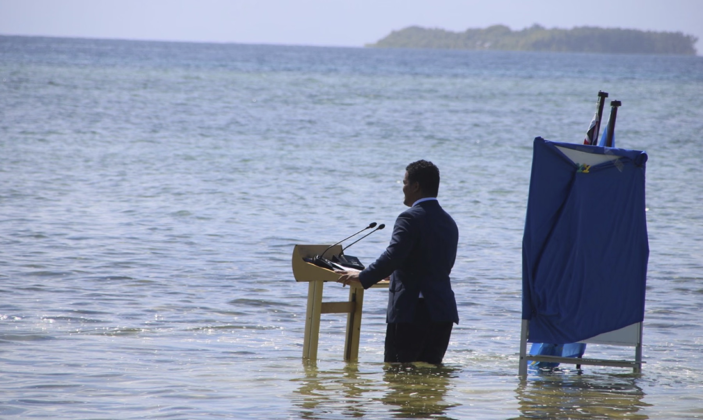
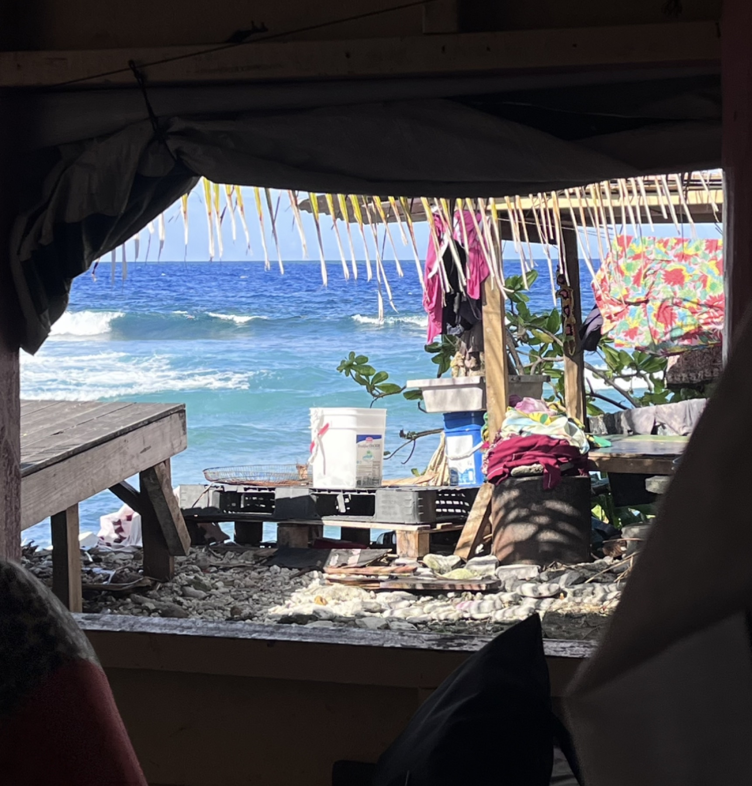
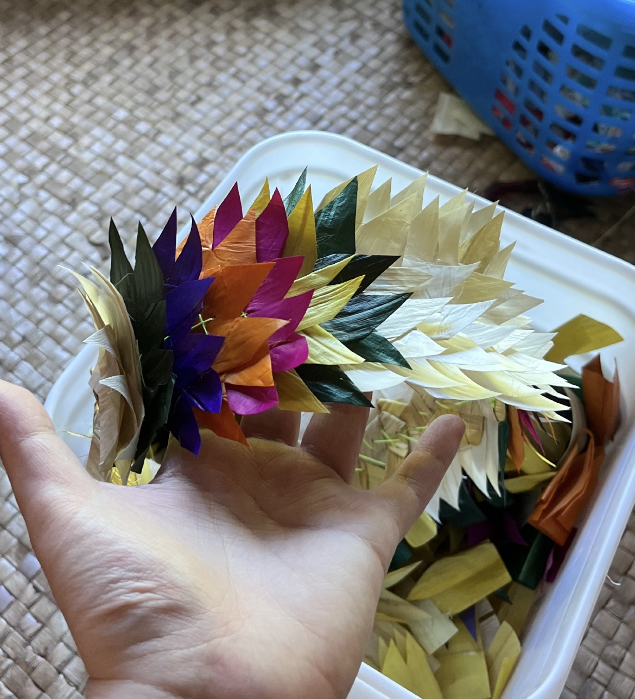
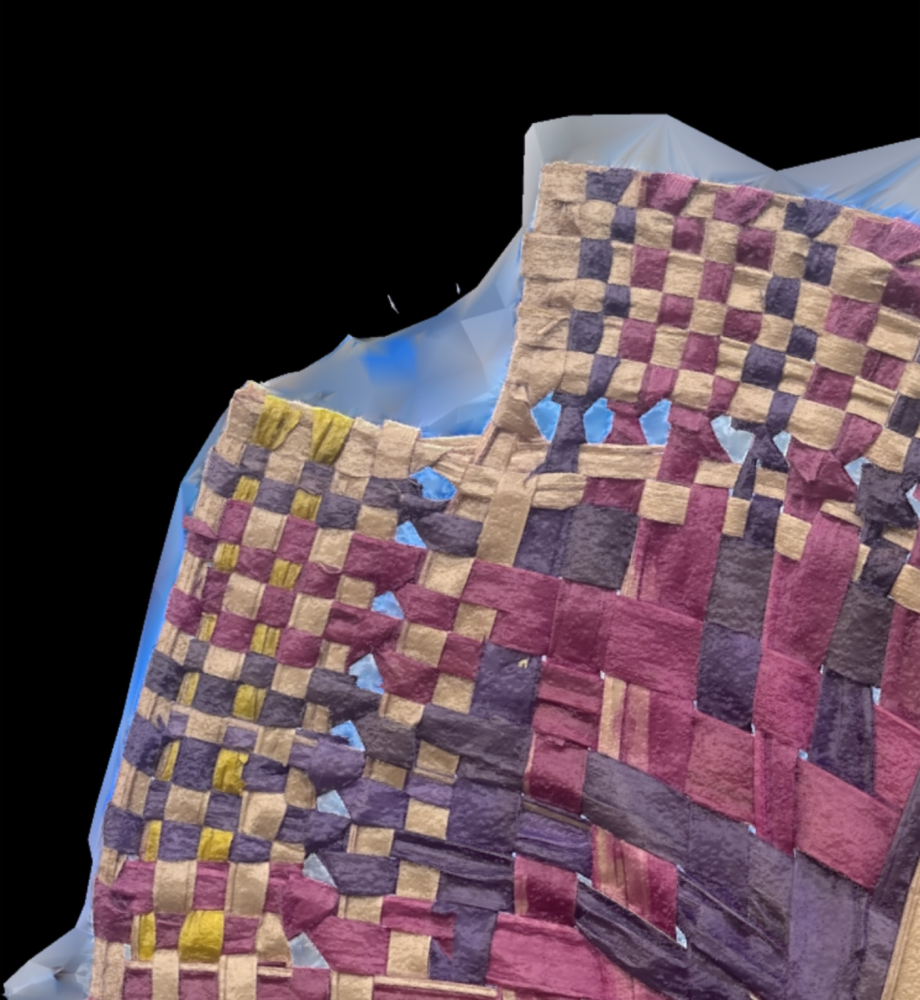
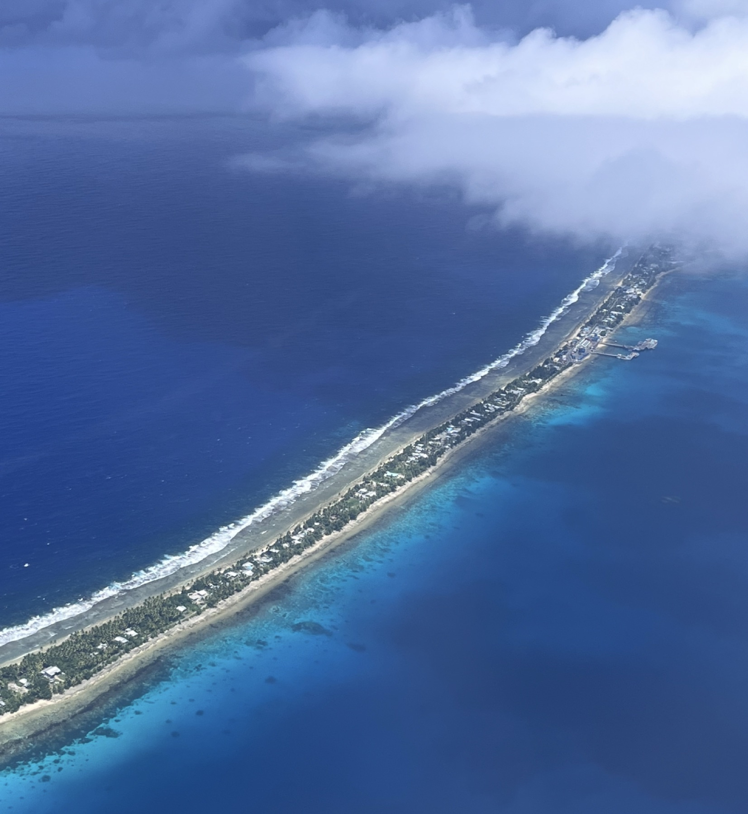
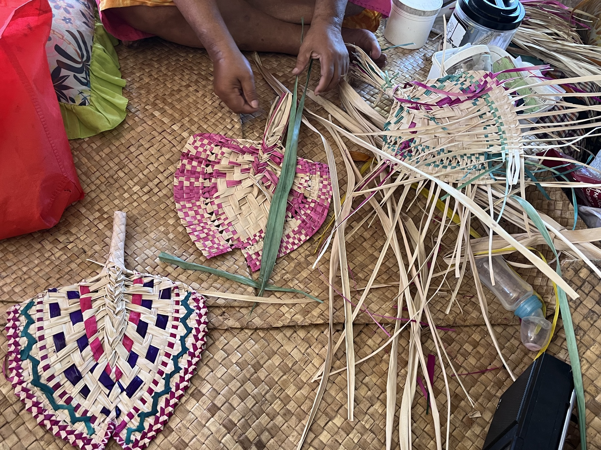
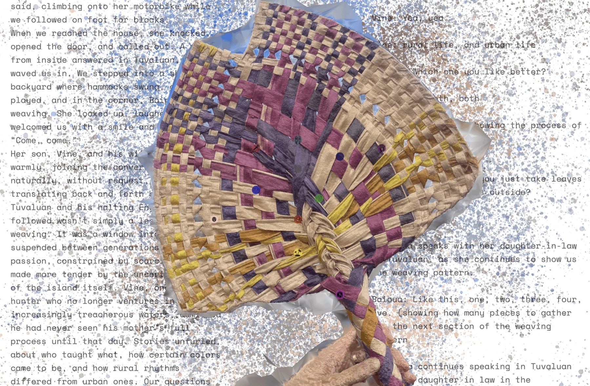

The starting point
Memory is never still.
Memory Tides explores recollections as shifting landscapes. Memories ebb, overlap, and resurface; the project gives that movement a visible, spatial form.
{kind=link}

{kind=link}

Taking shape
Working with movement.
Computational design, data processing, and spatial visualization come together in an interactive installation. Tidal movements provide a way to represent the fluid, layered character of personal and collective histories.
The experience
An environment for remembering.
The installation invites audiences to experience memory as a living geography. Its climate narrative research and focus on Tuvalu bring questions of place, loss, and remembrance into the work.
{kind=link}

{kind=link}

{kind=link}

{kind=link}

{kind=link}

Project notes
The installation was exhibited at e-flux, within Marina Otero Verzier: When Pixels Wash Ashore , and at the 2025 Lisbon Architecture Triennale, How Heavy Is a City? .
Project notes
- Type: Data Mourning Studio
- Location: Tuvalu
- Focus: Climate Change Impact
- Approach: Interactive Storytelling
Tools & methods
- Python Data Processing
- html, css, javascript
- Projection Mapping
- Interactive Installation Design
- Climate Narrative Research
- Storytelling